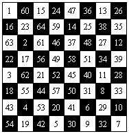
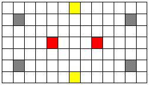

| The Least Possible Effort |
For since
the fabric of the universe is most perfect and the work of a most wise Creator,
nothing at all takes place in the
universe in which some rule of maximum or minimum does not appear.
Leonhard Euler
The Knight's tour is a classic chess problem which was studied (and probably solved) over 1000 years ago. The problem is, from an arbitrary starting position, move a Knight chess piece around a chessboard visiting all other squares on the board exactly once.

A related problem is to find all starting positions that get us to a solution. For instance, in the chessboard above you can get a solution starting at the position numbered with 1 as well as 26, 54 and 7 (due to symmetry).
This problem is more interesting if the board is not necessarily a square.
Given a grid of n rows and m columns representing a board, 6 ≤ n, m ≤ 10000, find the minimum number of starting positions you must examine, such that we can find all the solutions for the Knight's tour.
For example, in the grid:

the cells with the same color represent one cell and its symmetric ones; so we can examine only one cell of each color.
The first line of the input contains an integer, t, indicating the number of test cases. For each test case, there is a line with two numbers separated by blanks, 6 ≤ n, m ≤ 10000, that is, the size of the board (n rows and m columns).
For each test case, the output should consist of one line showing the minimum number of starting positions needed to find all the solutions of the Knight's tour.
3 6 9 15 10 7 13
15 40 28